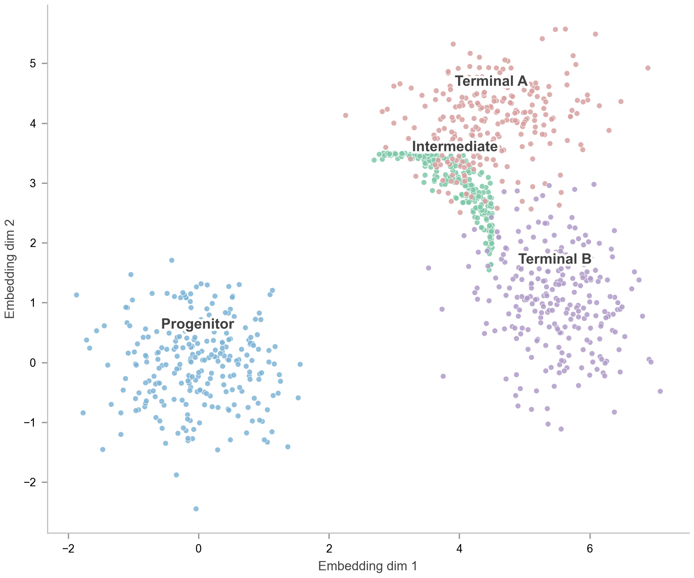

Manifold v3 — solving "点太小+散" feedback
v2
点太小+散
s=12, axis loose, no hull shading

v3
P3 sub-rule applied
s=28 + 4-cluster convex-hull translucent shading + tight axes (5% pad) + equal aspect
ref
diffusion_swiss_roll
用户曾说"非常好看"